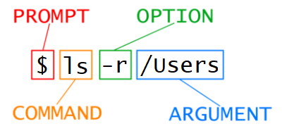

The command-line interface
Interaction with a computer is typically done through a graphical user interface (GUI). With a GUI, instructions are sent to the computer by clicking a mouse and interacting with menus. GUIs are often designed to be used intuitively, and basic interaction with one can be done from the first moment a user sees it. However, this way of delivering instructions to a computer involves a lot of user interaction, which can greatly reduce productivity and is prone to user-error.
Imagine the following task: for a literature search, you have to copy the third line of one thousand text files in one thousand different directories and paste it into a single file. Using a GUI, you would not only be clicking at your desk for several hours, but you could potentially also commit an error in the process of completing this repetitive task.
In such tasks we can take advantage of a Unix shell, which is often referred to as a terminal. A Unix shell is both a command-line interface (CLI) and a scripting language. With the proper commands, the shell enables us to repeat specific tasks with or without modification as many times as we would want. The task we describe above can be completed in seconds using the shell.
Basic commands
During the installation of the software we use in our courses you have watched a video on how to use the Mac OS terminal. You have encountered the prompt, commands, and arguments:

Where cd is the command, with the argument ... Each part is always separated by spaces. If you omit the space between cd and .. the shell will look for a command called cd.., which doesn’t exist. Capitalization is also important. For example, after entering CD .., the terminal will respond with command not found.
In the exercises below you will practice the very basics of the terminal. Don’t worry; the exercises won’t be as intricate as the task described in the example above.
You don’t have to hand in these practice exercises. They’re here for you to test yourself.
Exercise 1 Starting from /Users/amanda/data, which of the following commands could Amanda use to navigate to her home directory, which is /Users/amanda?
1. `cd .`
2. `cd /`
3. `cd /home/amanda`
4. `cd ../..`
5. `cd ~`
6. `cd home`
7. `cd ~/data/..`
8. `cd`
9. `cd ..`
Exercise 2 Using the filesystem diagram below, if pwd displays /Users/thing, what will ls -F ../backup display?
1. `../backup: No such file or directory`
2. `2012-12-01 2013-01-08 2013-01-27`
3. `2012-12-01/ 2013-01-08/ 2013-01-27/`
4. `original/ pnas_final/ pnas_sub/`

Answers
Exercise 1
1. No: `.` stands for the current directory.
2. No: `/` stands for the root directory.
3. No: Amanda’s `home` directory is `/Users/amanda`.
4. No: this command goes up two levels, i.e. ends in `/Users`.
5. Yes: `~` stands for the user’s home directory, in this case `/Users/amanda`.
6. No: this command would navigate into a directory home in the current directory if it exists.
7. Yes: unnecessarily complicated, but correct.
8. Yes: shortcut to go back to the user’s home directory.
9. Yes: goes up one level.
Exercise 2
1. No: there is a directory backup in `/Users`.
2. No: this is the content of `Users/thing/backup`, but with .., we asked for one level further up.
3. No: see previous explanation.
4. Yes: `../backup/` refers to `/Users/backup/`.
Options / flags

Sometimes options are referred to as parameters or flags. A command
can be called with more than one option and more than one argument, but a
command doesn’t always require an argument or an option. Options
change the behavior of a command and arguments tell the command what to
operate on (e.g. files and directories). In this case, the option -r
displays folders/directories in reverse order. Just like commands and
folders, options are case sensitive. In this specific case, if we would
have used -R the directory tree would be displayed recursively. The computer would have listed all nested folders and files inside the directory provided by the argument. Another example of this is the option -s, which for ls will display the size of files and directories alongside the names, while ls -S will sort the files and directories by size.
In the exercises below you will come across the option
-F. On Windows, this function doesn’t do much, but on other platforms the option makes sure that folders and executables are recognisable by adding the character/or*respectively to the end of their names.
Exercise 3 Using the filesystem diagram below, if pwd displays /Users/backup, and -r tells ls to display things in reverse order, what command(s) will result in the following output:
pnas_sub/ pnas_final/ original/

1. `ls pwd`
2. `ls -r -F`
3. `ls -r -F /Users/backup`
Answer
Exercise 3
1. No: `pwd` is not the name of a directory.
2. Yes: `ls` without directory argument lists files and directories in the current directory.
4. Yes: uses the absolute path explicitly.
Moving files
Moving files and directories can be done with the command mv, which is short for ‘move’. Let’s say that we have a file named draft.txt
that we have made while writing our thesis. This file actually contains
a bunch of quotes, so a much more descriptive name would be quotes.txt. Renaming the file can be done using move as well:
$ mv thesis/draft.txt thesis/quotes.txt
The first argument tells mv what we are ‘moving’, while the last argument is where it is to go. In this case, we are moving thesis/draft.txt to thesis/quotes.txt, which has the same effect as renaming the file.
mv can also be used to move files to directories. We use mv once again, but this time we use just the name of a directory as the second argument to tell mv that we want to keep the filename but put the file somewhere new.:
$ mv thesis/quotes.txt .
In this case, the directory name we use is the special directory name .. This moves quotes.txt into the current working directory. We can even move multiple files at once:
$ mv textfile1.txt textfile2.txt some_directory
Be careful when specifying the target file name, since
mvwill silently overwrite any existing file with the same name, which could lead to data loss.
Exercise 4 After running the following commands, Jamie realizes that she put the files sucrose.dat and maltose.dat into the wrong folder. The files should have been placed in the raw/ folder.
$ ls -F
analyzed/ raw/
$ ls -F analyzed
fructose.dat glucose.dat maltose.dat sucrose.dat
$ cd analyzed
Fill in the blanks to move these files to the raw/ folder
$ mv sucrose.dat maltose.dat ____/____
Answer
Exercise 4
$ mv sucrose.dat maltose.dat ../raw
Recall that .. refers to the parent directory (i.e. one above the current directory) and that . refers to the current directory.
You may have noticed that all files you have seen up to now are named ‘something dot something’. This is just a convention: we can call a file
mythesisor almost anything else we want. However, we use two-part names to help us (and our programs) tell different kinds of files apart. The second part of a filename is called the extension and indicates what type of data the file holds:.txtsignals a plain text file,.cfgis a configuration file full of parameters for some program,.pngis a PNG image, and so on. This is just a convention, albeit an important one. Files contain bytes: it’s up to us and our programs to interpret those bytes according to the rules for plain text files, PDF documents, configuration files, images, and so on. Naming a PNG image of a whale aswhale.mp3doesn’t somehow magically turn it into a recording of whale song, though it might cause the operating system to try to open it with a music player when someone double-clicks it. If at any point you want to check something in Finder, you can useopen .to open the folder you are currently in, oropen document.pdfif you would like to open a file using the default application for that file extension. On Windows, the equivalent command isexplorerorstart.
Copying files
The cp command works very much like mv, except it copies a file instead of moving it.
$ cp quotes.txt thesis/quotations.txt
We can check that it did the right thing using ls with two paths as arguments — like most Unix commands, ls can be given multiple paths at once:
$ ls quotes.txt thesis/quotations.txt
We can also copy a directory and all its contents by using the recursive option -r to back up a directory:
$ cp -r thesis thesis_backup
We can check the result by listing the contents of both the thesis and thesis_backup directory:
$ cp -r thesis thesis_backup
$ ls thesis thesis_backup
thesis:
quotations.txt
thesis_backup:
quotations.txt
Exercise 5 Suppose that you created a plain-text
file in your current directory to contain a list of the statistical
tests you will need to do to analyze your data, and named it statstics.txt.
After creating and saving this file you realize you misspelled the
filename! You want to correct the mistake, which of the following
commands could you use to do so?
1. `cp statstics.txt statistics.txt`
2. `mv statstics.txt statistics.txt`
3. `mv statstics.txt .`
4. `cp statstics.txt .`
Exercise 6 What is the output of the final ls command in the sequence shown below?
$ pwd
/Users/jamie/data
$ ls
proteins.dat
$ mkdir recombined
$ mv proteins.dat recombined/
$ cp recombined/proteins.dat ../proteins-saved.dat
$ ls
1. `proteins-saved.dat recombined`
2. `recombined`
3. `proteins.dat recombined`
4. `proteins-saved.dat`
Answers
Exercise 5
1. No. While this would create a file with the correct name, the incorrectly named file still exists in the directory and would need to be deleted.
2. Yes, this would work to rename the file.
3. No, the period (.) indicates where to move the file, but does not provide a new file name; identical file names cannot be created.
4. No, the period (.) indicates where to copy the file, but does not provide a new file name; identical file names cannot be created.
Exercise 6 We start in the /Users/jamie/data directory, and create a new folder (mkdir) called recombined. The second line moves (mv) the file proteins.dat to the new folder recombined. The third line makes a copy (cp) of the file we just moved. The tricky part here is where the file was copied to. Recall that .. means ‘go up a level’, so the copied file is now in /Users/jamie. Notice that ..
is interpreted with respect to the current working directory, not with
respect to the location of the file being copied. So, the only thing
that will show using ls (in /Users/jamie/data) is the recombined folder.
1. No, see explanation above. proteins-saved.dat is located at `/Users/jamie`
2. Yes
3. No, see explanation above. proteins.dat is located at `/Users/jamie/data/recombined`
4. No, see explanation above. `proteins-saved.dat` is located at `/Users/jamie`
Removing files
The Unix command associated with removing is rm:
$ rm quotes.txt
⚠️ The shell does not have a trash bin that can be used to recover deleted files. Removing a file using rm is permanent and unrecoverable. The -i option will prompt before (every) removal; use Y to confirm deletion or N to keep the file. By using the -i option, we have the chance to check that we are deleting only the files that we want to remove.
When files are deleted, they are unlinked from the file system so that their storage space on disk can be recycled. Tools for finding and recovering deleted files do exist, but there is no guarantee they will work in any particular situation, since the computer may recycle the disk space right away.
If we try to remove the thesis directory using rm thesis, we get an error message:
$ rm thesis
rm: cannot remove 'thesis': Is a directory
This happens because rm by default only works on files, not directories. rm can remove a directory and all its contents if we use the recursive option -r, and it will do so without any confirmation prompts:
$ rm -r thesis
⚠️ Given that there is no way to retrieve files deleted using the shell, rm -r should be used with great caution.
Applying knowledge
Download this zipped file structure, move it to a folder where you can easily access it and navigate to this folder using the terminal using cd. Remember that you can find the current folder using pwd and see whether you are in the folder holding file_structure_exercise.zip by using ls. Unzip the file using the command unzip file_structure_exercise.zip. Use cd to navigate into the file structure you have just unpacked.
Exercise 7 What would be the command to remove the zip you have just unpacked using rm?
Exercise 8 Use ls --help to show information that explains all options that can be applied to the command ls.
Can you find an option that can be used to list not only all files and
directories in the current directory, but also all (sub)subdirectories
and files? Using this option, create an overview of the directories and
files in the provided file structure.
Exercise 9 A file was misplaced in the main directory, named notes.txt.
This file contains the notes for lecture 2. Find the directory that
contains the notes for the first lecture and take note of the naming
convention of the file. Rename notes.txt using this naming convention and move it to the folder containing notes using mv.
Exercise 10 You need more space on your device and have decided you can get rid of the music directory and all subdirectories and files in there; you use an online music streaming service anyway. What is the complete command you would need to use if you want to confirm every step in the process of the removal?
Exercise 11 Perform the following tasks using the shell from the main directory:
- Create a folder named
ml1inuniversity. - Create a file named
TODO.txtinuniversity/ml1/` - Create a copy of
images/namedimages_backup/
Answers
Exercise 7 rm -i ../file_structure_exercise.zip
Exercise 8 This can be done using the option -R. ls -R (when slightly reformatted) gives the following overview of the whole file structure:
games/
halo.exe*
snake.exe*
images/
selfie.png
vacation.png
music/
classic/
other/
'Rick Astley - Never Gonna Give You Up.mp3'
rap/
rock/
university/
notes/
lecture1_notes.txt
pdp/
module_1/
hello.py
homework1.txt
program.py
module_2/
homework.txt
notes.txt
You could also use the option -1 to order everything in rows, which makes it easier to read.
Exercise 9 Assuming you work from the main directory: mv notes.txt university/notes/lecture2_notes.txt.
Exercise 10 rm -ri music, or rm -r -i music
Exercise 11
mkdir /university/ml1touch /university/ml1/TODO.txtcp -r images/ images_backup/
Acknowledgement
The information and exercises on this page have been adapted from content on Software Carpentry under the CC BY 4.0 license.